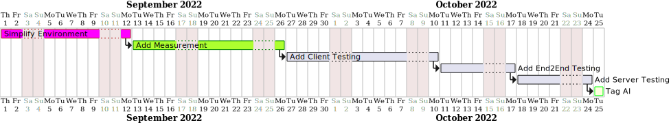
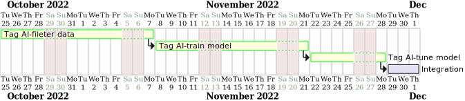

Overview
Review project
Propose top 1-3 initiatives


Assignment
Simplify Environment
Date: 20220903
Status
- assept.
Context and Problem Statement
Although current setup step not too complicate, but it is a hidden cost, when projects become bigger, the same code config needs duplication to two different places.
The docker-compose not execute as a original simple way, we should make it back to one file when it not become too complicated,
It's a one time job but could benefit all new developers to start this project with zero config and start it only needing to run docker-compose up.
Considered Options
-
initialize mongodb with /docker-entrypoint-initdb.d
- let it easy use docker-compose down to reset db.
- https://stackoverflow.com/questions/42912755/how-to-create-a-db-for-mongodb-container-on-start-up
- sync docker-compose.yml and use .env.dev and .env.prod to separate environment
-
disable a service in docker-compose.yml for different environment
- https://rotadev.com/is-there-any-way-to-disable-a-service-in-docker-compose-yml-dev/
Decision Outcome
How to make it happen and intermediate milestones
This task will estimate 8 day to finish, and already have a task to do.
Positive Consequences
- It helps the new user setup environment easily.
Negative Consequences
- Need extra effort to design different dimensions(such as dev or production) mechanism.
Add Measurement
Date: 20220904
Status
- assept.
Context and Problem Statement
-
If don't have data to prove result, The all of feature request only could keep in imaginary, so this adr will help build data collect mechanism, And after it, we could use it to estimate features, and reference it, we will go or no go.
-
Exists Measurement:
- "react-ga" only in client app, and only for logging page-view.
Considered Options
-
Google analytics
- use google analytics, we could reuse google infrastructure, and focus on how to collect data. when google gets the data, it will do de-identification, this will let us not eaily mapping with real users.
-
Build our own data analytics platform.
- if build our own data platform, we need operate our machine, but we could have all the control with our data.
-
Build own cdp solution.
-
App error tracing
Decision Outcome
How to make it happen and intermediate milestones
- add Measurement to client side (user with browser)
- add Measurement to the application layer. (backend)
- When adding it with the application layer, we could trace which backend is most used, and we could improve that backend.
Positive Consequences
- It could help us use data to drive decisions.
Negative Consequences
- Need to extract traffic to logging data, and could use async ways to improve it.
Add Testing
Date: 20220904
Status
- assept.
Context and Problem Statement
Some people will thinking coding with test (Unit Test), will let it become slow, But when you need process large changes or any basic feature changes, it could help you quickly verify if all existing features are still correct. And it also makes you more confident to do refactoring.
Considered Options
Test Runner
React unit test framework
unit test code coverage
End to end test
Decision Outcome
How to make it happen and intermediate milestones
- In this step, we'll follow "Add Measurement", and learn to know which page is important.
- We will promote high usage page's code coverage.
- Choose solution
- Test Runner -> mocha
- mocha could use most of node version
- React unit test framework -> @testing-library/react
- testing-library could integrate with more library.
- End to end test -> Cypress
- It's easy to install.
- Test Runner -> mocha
Positive Consequences
- We could more confident to make change, and could use the command line to do testing to avoid new changes breaking your existing code.
Negative Consequences
- Need extra time to develop testing code.
Long Term Plan
Date: 20220904
Status
- feature plan.
Context and Problem Statement
- After we have the testing, we could have more brave changes or any refactoring with modern framework.
- In this adr I'll plan it with a simple AI, to do auto tagging.
Considered Options
- use exists AI library
- rubixml (PHP)
- TensorFlow
Decision Outcome
How to make it happen and intermediate milestones
- Train model
- use exists tags for classification.
- use Ngram to get each classification's feature.
- use this feature (which is extracted by Ngram), to go with KNN for train model.
- Use model
- raw data use Ngram to get feature
- use KNN model to know this raw data should go with which tag.
Positive Consequences
- It's worth a try to add new features with new code structure.
Negative Consequences
- The AI classification may increase running time, could use async to resolve it.
Code Review
https://github.com/ozkanonur/feednext/pull/91
Before code review
Before code review, I'll ask this developer to provide more context.
- Why make these changes?
- How to verify changes are run as expected?
- If have unit test policy, will also ask to follow unit test policy.
- I'll also ask to avoid large changes, the large changes will make it difficult to merge back to main branches.
client/next.config.js
- async function not contain an await keyword, should confirm that, add await or remove async
client/src/@types/pages/create-feed/index.d.ts
- The
tags:stringwill be confusing. It better change to "tagId": string or "tags": string[].
client/src/pages/[feed]/index.tsx
- handleDeSelect not having return data should also add (): void => {...}
client/src/pages/index.tsx
- Didn't see "skipValueForPagination, tagFilter, sortBy, isLoading" use in useEffect, need more comment why make them as useEffect dependency.
- need take care tagFilter here, it's possible to get the wrong variable, could use "useCallback" to fix it.
client/src/services/api/Title/index.ts
- using the spread operator here will make it a little weird. Because username, tags, sortBy are all string types, I need more comments here.
server/package.json
- We could take a note, it's to avoid 0.12.0 breaking changes.
- CHANGELOG
- https://github.com/typestack/class-validator/blob/6a5762196b06655d51dddfff7807a5a87fc12216/CHANGELOG.md
server/src/v1/Title/Service/title.service.ts
- should remove async, and improve with sql batch update solution to speed performance.
- typeorm bulk update via raw query
- https://stackoverflow.com/questions/53790994/bulk-update-via-raw-query-in-typeorm
avoid use if single line.
The if single line statement easily makes errors, when you do copy and paste.